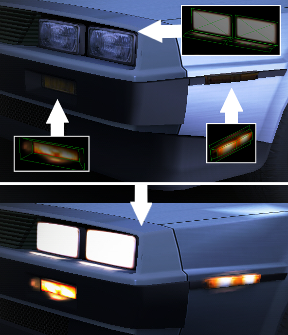

This page explains how to add overlay meshes and light flares to your car. Firstly, what are overlay meshes and light flares? Light overlay meshes are meshes that are hidden by default, and only appear when needed. There are 2 kinds of overlay meshes: Headlights and Brakelights. Headlight meshes serve as the front and rear lights of the car, and will only appear in dark ambiences. These have to be named headl_*something* in your model to work. Brakelight meshes act as the rear brakelights for your car, and appear in all ambiences, when you apply the brake on your car. These have to be names brakel_*something* in your model The easiest way of making these is to simply make a copy of the front and rear lights of your car, but can be expanded further, shown by this example here:  Light Flares: W.I.P.